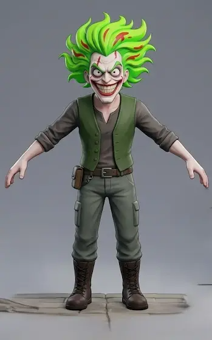
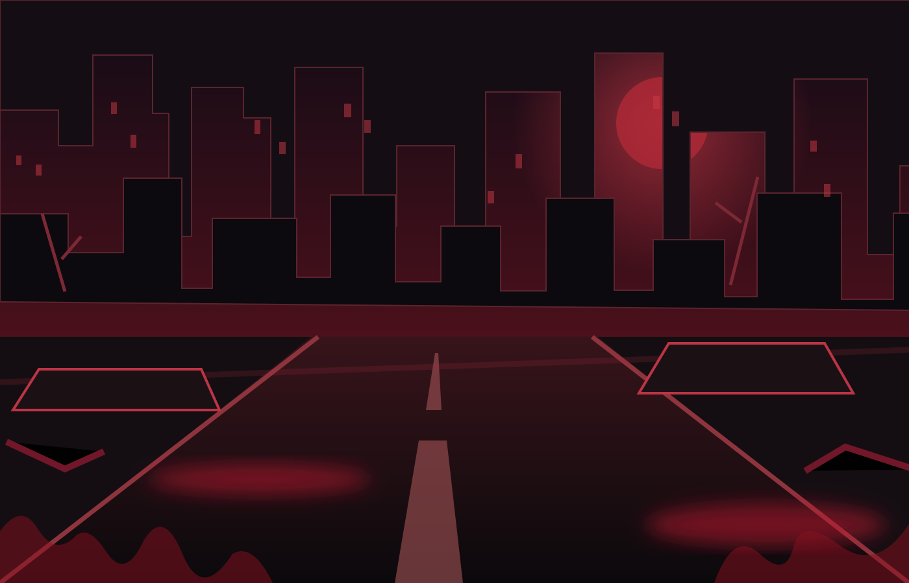
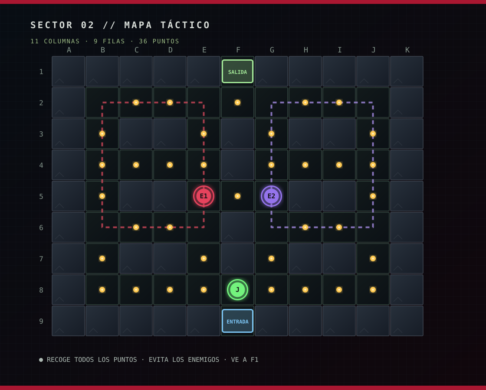

La última avenida
El corredor aparece solo en una ciudad urbana distópica. Los edificios se levantan sobre calles abandonadas y las señales de alarma anuncian que la zona ya no es segura.
EXPEDIENTE 001 / UNITY WEBGL / ENDLESS RUNNER 3D
CORRE. ESQUIVA. SOBREVIVE.
Las calles están vacías. Las luces se apagan. Y el peligro nunca deja de perseguirte. Una carrera interminable por una ciudad distópica al borde del colapso.
NUEVA MISIÓN DISPONIBLE ◈ EXPLORAR LABERINTO 3D

Un mismo universo distópico. Dos desafíos. Ambos se ejecutan aquí en el portal.
Una historia de supervivencia entre avenidas desiertas, luces rojas y una amenaza que se acerca con cada segundo.

ARCHIVO VISUAL // SECTOR CEROEl corredor aparece solo en una ciudad urbana distópica. Los edificios se levantan sobre calles abandonadas y las señales de alarma anuncian que la zona ya no es segura.
Su única opción es avanzar. Barricadas, cajas y estructuras elevadas surgen inesperadamente en el camino. Cada obstáculo exige una reacción inmediata.
La carrera se acelera; esquivar se vuelve más difícil. El objetivo es sobrevivir el mayor tiempo posible, acumular puntos y superar el récord.
Si se agotan las vidas, la carrera termina. Si el corredor resiste, su puntuación seguirá creciendo y podrá marcar una nueva hazaña.
Un corredor imposible de confundir: una sonrisa perturbadora, cabello verde eléctrico y el instinto de seguir adelante.
Un personaje de estética Cartoon 3D que contrasta con la oscuridad del escenario. Su cabellera verde, el rostro expresivo, el chaleco, los pantalones cargo y las botas construyen una silueta reconocible en plena carrera.
Arte del protagonista proporcionado por el equipo.
El personaje corre automáticamente. Tus reflejos deciden cuánto dura la huida.
El protagonista avanza automáticamente por la avenida, sin detenerse.
Presiona la flecha arriba para saltar cajas, barricadas y bloques de construcción.
Presiona la flecha abajo para pasar bajo estructuras, barras y señales elevadas.
Los obstáculos aparecen en intervalos variables. Una colisión puede costarte una vida.
A medida que pasa el tiempo, el ritmo aumenta y el margen de reacción disminuye.
La puntuación crece con la supervivencia. Sin vidas, aparece el final de la partida.
Controles definidos en la Evaluación 2. Las teclas adicionales dependen de la compilación publicada.
Ficha técnica, reglas esenciales y ciclo de supervivencia.
La partida comienza aquí mismo. No necesitas salir de este portal.
Entra en la ciudad desolada, esquiva lo que se cruce en tu camino y supera tu propio récord.
El juego de Unity se carga dentro de este recuadro.Si la pantalla no responde, haz clic dentro del juego para darle el foco. Si el servidor impide la visualización incrustada, puedes abrir el juego original como alternativa. Los marcos y efectos de sangre pertenecen a este portal; la escena interna de Unity conserva sus gráficos originales.
36 PUNTOS. 2 CAZADORES.
1 SOLA SALIDA.
La ciudad desolada ahora es una trampa de callejones sin salida. Recorre el laberinto, recoge los 36 puntos y desbloquea la puerta antes de que los enemigos te encuentren.

La carrera no terminó. El corredor encontró refugio entre los edificios destruidos, pero las calles ahora forman un laberinto vigilado.
Tras escapar de las avenidas, el protagonista llega a una red de pasillos rodeados de muros, humo y luces de emergencia. La única ruta de salida permanece bloqueada.
Para abrir la puerta debe recorrer cada zona segura y recoger los 36 puntos del laberinto. Cada punto vale 10 y acerca al corredor a su escape.
Dos enemigos patrullan rutas fijas. Si consiguen verte en línea recta, te perseguirán por los pasillos. Un solo contacto termina la partida.
Cuando no queden puntos, la salida situada al norte se abre. Llega hasta ella sin ser atrapado para conseguir la victoria.
El personaje de la carrera urbana regresa al laberinto: cabello verde eléctrico, sonrisa inquietante y ropa oscura. Su estilo Cartoon 3D contrasta con el entorno tenebroso de la ciudad.
Una experiencia de exploración, recolección y sigilo inspirada en Pac-Man, trasladada al universo 3D de Ciudad Sangrienta.
Busca los puntos amarillos. Cada uno vale +10, desaparece al recogerlo y reduce el contador de restantes.
11 columnas × 9 filas. Camina por pasillos abiertos, gira en las esquinas y evita chocar contra los muros.
Cada enemigo recorre cuatro puntos de vigilancia usando búsqueda de caminos alrededor de las paredes.
Un enemigo te detecta si hay visión directa a 8 unidades o menos. Si un muro bloquea el rayo, no te ve.
Al detectar al jugador, el enemigo abandona la patrulla y lo sigue. Cuando pierde visión, vuelve a su ruta.
Recoge los 36 puntos para abrir la salida. Si alcanzas la puerta, ganas; si te toca un enemigo, pierdes.
Los indicadores y posiciones corresponden a la Evaluación de Unidad 3. Las cifras describen el diseño solicitado para el videojuego.
Patrulla continua sobre su ruta de cuatro puntos y vuelve al inicio.
Comparte la regla de patrulla, pero cubre la zona opuesta del laberinto.
La navegación de los enemigos se basa en NavMesh / NavMeshAgent para rodear paredes y en raycasting para detectar al jugador. Recolección completa: 36 × 10 = 360 puntos por los puntos del mapa.
Juega la experiencia de Unidad 3 aquí, en el mismo portal. Primero presiona «Iniciar laberinto» y después haz clic dentro del juego para activar el teclado.
Dos enemigos rastrean tus movimientos. Recoge todos los puntos, desbloquea la salida y escapa antes de que te alcancen.
El juego original de Unity se carga dentro de este recuadro.